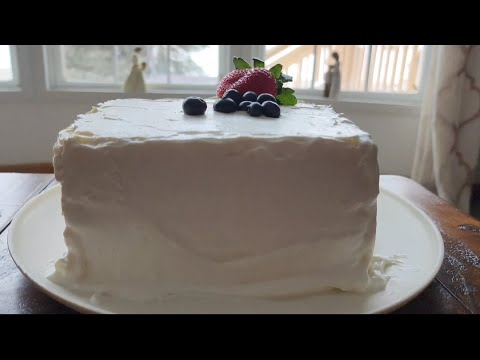

The Korean bakery cake everyone films and nobody publishes: two clouds of steam-baked white sponge around a slab of diplomat cream, cut into bare-sided blocks. Recipe rescued from the pinned comment of A Taste of Curiosity (sponge via Umi's Baking). A kitchen scale helps; cold nerves help more.
Pastry cream first, so it can chill. Stir the condensed milk and cornstarch together. Bring the milk, 1½ tbsp cream, sugar, and vanilla bean just to the edge of a boil, stirring. Off the heat, add the cornstarch mixture and stir vigorously until thick. Butter in. Press plastic wrap onto the surface and refrigerate until fully cold.
Line two 9-inch pans with parchment. Oven to 320°F. Warm the milk, oil, and condensed milk over a double boiler to 105°F, then sift in the cake flour and milk powder and whisk until the batter falls in smooth ribbons.
Whip the egg whites to foam, then add the sugar in thirds — the lemon juice goes in with the last third. At soft peaks, sprinkle the cornstarch over and whip to stiff peaks. Add the vanilla.
Loosen the batter with a quarter of the meringue, then fold the batter into the remaining meringue, gently, until just combined. Deflate it now and you'll bake a white frisbee.
Divide between the pans and set them in a larger pan with 1 inch of boiling water — a bain-marie is what keeps the crumb milk-white and damp. Bake 25–35 minutes; check through the glass, door closed. Done when the top springs back. Cool completely.
Finish the diplomat cream: fish out the vanilla pod (scrape the seeds back in) and beat the cold pastry cream about 3 minutes until soft. Whip the ½ cup cream to stiff peaks and fold the two together.
Stack: one sponge, then a 2-inch slab of diplomat cream — nearly as thick as the cake itself — then the second sponge. Frost only the top with what's left. Sides stay bare. Chill.
Whip the last ½ cup cream with the sugar (and booze, if using) to stiff peaks and coat the sides generously. Chill again, then cut into tall square blocks with a hot dry knife.